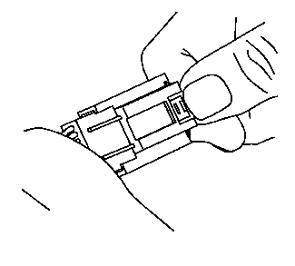
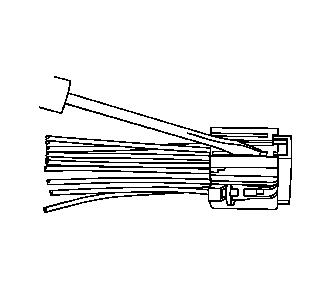
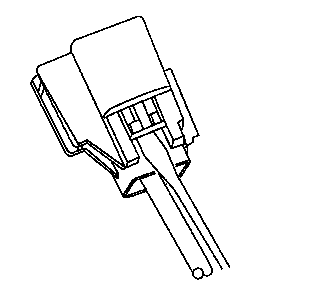
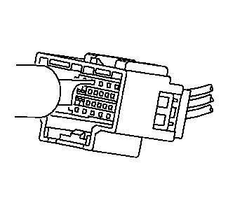
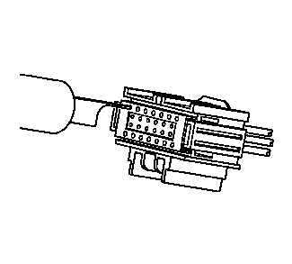

Yazaki连接器（16路）
专用工具
•
EL-38125-550
端子拆卸工具组件
•
EL-38125-580
端子拆卸工具组件
•
J-38125-215
端子拆卸工具
关于当地同等工具，参见“
专用工具
”。
端子拆卸程序

1.
按压锁片，将连接器的两半拉开。
注意:
端子定位器 (TPA) 易碎，如操作不慎，则可能碎掉。
2.
非常小心地用小号平刃工具把端子定位器朝连接器两侧的端面推动。

3.
带有母端子的连接器外插半部分视图。

4.
带有公端子的连接器内插半部分视图。
5.
将J-38125-215工具插入端子释放孔中，松开端子。

6.
带有公端子的连接器内插半部分视图。

7.
带有母端子的连接器外插半部分视图。
8.
将拆卸工具固定就位，同时从连接器背部，轻轻拉出导线。从连接器中拔出端子时，切勿强行用力。
9.
按照下面的“
修理连接器端子（端子修理）
、
修理连接器端子（终端引线修理）
”程序修理端子。
10.
将修好的端子重新安装回孔中。重复诊断程序以检验修理效果，并重新连接连接器壳体。